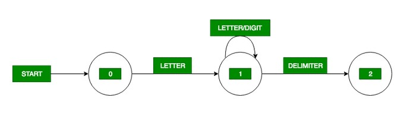

Answer:-
Giving names to regular expressions is referred to as a Regular definition.
If Σ is an alphabet of basic symbols, then a regular definition is a sequence of definitions of the form
dl → r 1
d2 → r2
………
dn → rn
- Each di is a distinct name.
- Each ri is a regular expression over the alphabet Σ U {dl, d2,. . . , di-l}.
Example: Identifiers is the set of strings of letters and digits beginning with a letter. Regular
definition for this set:
letter → A | B | …. | Z | a | b | …. | z | digit → 0 | 1 | …. | 9
id → letter ( letter | digit ) *
Transition diagram for Identifiers
Transition diagram is a special kind of flowchart for language analysis.
In transition diagram the boxes of flowchart are drawn as circle and called as states.
States are connected by arrows called as edges. The label or weight on edge indicates the input character that can appear after that state.
Transition diagram of identifier is given below:

This transition diagram for identifier reading first letter and after that
letter or digit until the next input character is delimiter for identifier, means the character that is neither letter nor digit.
To turn up the transition diagram into a program we construct the program segment code for each state of transition diagram.
State-0:
C=GETCHAR();
if LETTER(C) then goto State 1
else FAIL()
State-1:
C=GETCHAR();
if LETTER(C) OR DIGIT(C) then goto State 1
else if DELIMITER(C) then goto State 2
else FAIL()
State-2:
RETRACT();
RETURN(ID, INSTALL())
Where,
Next character for input buffer we use GETCHAR() which return next character.
LETTER(C) is a procedure which returns the true value if and only if C is a letter.
FAIL(C) is a routine which RETRACT the look ahead pointer and start up the next transition diagram otherwise call error routine.
DIGIT(C) is a procedure which returns the true value if and only if C is a digit.
DELIMITER(C) is a procedure which returns the true value if and only if C Is a character that could follow the identifier for example blank symbol, arithmetic, logical operator, left parenthesis, right parenthesis, +, :, ; etc.
Because DELIMITER is not part of identifier therefore we must RETRACT the look ahead pointer one character for this purpose we use the RETRACT() procedure .
Because identifier has a value so to install the value of identifier in symbol table we use INSTALL() procedure.
In a computer language, a reserved word (also known as a reserved identifier) is a word that cannot be used as an identifier,
such as the name of a variable, function, or label – it is "reserved from use".
This is a syntactic definition, and a reserved word may have no meaning.The lexical
analyzer also follows rule priority where a reserved word, e.g., a keyword, of a language is given priority over user input. That is,
if the lexical analyzer finds a lexeme that matches with any existing reserved word, it should generate an error.